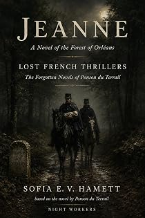

Jeanne
A novel of the forest of Orléans
by Pierre-Alexis Ponson du Terrail · translated by Sofia E. V. Hamettpar Pierre-Alexis Ponson du Terrail · traduit par Sofia E. V. Hamett
The bookLe livre
Not a fine Sunday but a bleak wet winter evening, and two gendarmes riding with their cloaks spread over their horses' hindquarters and their collars turned up against the fine close rain. "Filthy weather," says the sergeant. "Weather that's filthy," says the other. Ponson du Terrail's forest of Orléans is a real place with real cold in it, and something is waiting in it.
Non pas un beau dimanche mais un soir d'hiver maussade, mouillé et froid, et deux gendarmes à cheval, les larges manteaux bleus étalés sur la croupe, le col relevé contre la petite pluie serrée qui leur fouette le visage. « Sale temps », dit le maréchal des logis. « Temps sale », dit le gendarme. La forêt d'Orléans de Ponson du Terrail est un lieu réel où il fait réellement froid, et quelque chose y attend.
From the opening pagesLes premières pages
The Road from the Cour-Dieu
It was not on a fine Sunday but on a winter evening, bleak and wet and cold, that two gendarmes were out riding.
They had spread the wide blue cloaks that covered their horses’ hindquarters, turned up their collars to protect their necks, and they rode with their heads down against the fine close rain that whipped at their faces.
“Filthy weather,” said the sergeant.
“Weather that’s filthy,” said the ordinary gendarme, the faithful echo of his superior, like Pandore in the old Nadaud song.
“Did you see the milestone we just passed?”
“I saw it, sergeant, but it’s too dark to read the number.”
“It’s a good half-hour since we left the Cour-Dieu?”
“About half an hour, sergeant.”
“Weather that’s filthy,” said the sergeant.
“Filthy weather,” said the gendarme.
Neither of them said anything for a while. And, well — even when you are a gendarme, which is to say a modest hero forever ready to safeguard property and lay down his life for the social order, you are not much inclined to conversation when you are riding through wind and rain on a black night, along a sodden road, in the middle of the forest of Orléans, between Pithiviers and the Cour-Dieu.
At last the sergeant started again.
“Poliveau?”
“Sergeant?” answered the ordinary gendarme, that being his name.
“When you see the next milestone, take a look at it.”
“Yes, sergeant, I’ll take a look. And then?”
“You’ll get down off your horse.”
“Yes, sergeant.”
“And you’ll try to make out the number. I wouldn’t mind knowing how many kilometres there are between us and our supper.”
“Well now, sergeant,” said Poliveau the gendarme, abandoning his role of faithful echo for a moment to take an initiative of his own, “there’s no need for that.”
“No need to get off your horse?”
“That isn’t what I mean. There’s no need for me to look at the number on the milestone to know what it is.”
“And how will you manage that, comrade?”
“I can’t judge properly just at the minute, seeing we’re deep in the trees. But it’s my belief we aren’t far now from a place they call the Belle-Croix.”
“Very good. And is there a cross?”
“Certainly.”
“True enough, I noticed it this morning. But a cross is not a milestone, gendarme Poliveau.”
“True, sergeant, but ten paces from the cross there’s a milestone.”
“That’s another matter.”
“And that milestone is number fifteen.”
“God almighty,” said the sergeant. “A good long ribbon of road still to go, and not a house, not a tavern to warm ourselves with a glass of wine.”
“There,” said Poliveau, “I can see the cross. Look — there — on the right.”
“Ah, yes.”
“And the milestone —”
“I can see two of them,” said the sergeant.
“You can see two milestones?”
“Yes. One on the left, the other on the right.”
“Then you’re seeing double, sergeant, with all the respect I properly owe my superior.”
“I am not,” said the sergeant, putting out his hand. “There, on the left, at the edge of the ditch.”
“All right.”
“Don’t you see something white?”
“I do, that’s true enough. What on earth can it be?”
As gendarme Poliveau said it, his horse pricked its ears and stopped dead, showing a certain agitation. The horse is one of the creatures of this world with the keenest hearing of all, and Poliveau’s horse had heard something at a distance, a sound so faint, so slight, that neither the sergeant nor his companion had heard anything at all. Poliveau gave it the spur. The horse moved on again; but ten paces from the white object that had caught the two gendarmes’ attention, it stopped a second time.
And then the sergeant and the gendarme heard it distinctly in their turn: a small wail very like the cry of a newborn child. Then it seemed to them that the white object was moving.
“What the devil,” said the sergeant. “What is that? Hold my horse, Poliveau.”
And the good man swung smartly down, gathered up his cloak so as not to walk on it, went over to the white object, bent down over it and let out an exclamation of surprise. Dark as the night was, he had seen at once what it was. It was indeed a child’s cry they had heard, and the child, wrapped in white swaddling, had been laid at the side of the road, right up against the ditch. The poor little thing was struggling and crying, shivering with cold under the harsh kisses of the rain as the north wind drove it.
“Well, there’s a find,” said gendarme Poliveau, who had dismounted as well.
“Poor little creature,” said the sergeant. “It’s another stroke of luck that we came this way. It would have been dead of cold before morning.”
“What kind of wretched woman abandons her own child like that?” cried the gendarme, indignant.
“And to think a wolf could have come out of the wood and made its supper of it.”
The sergeant had wrapped the child in a fold of his cloak. “Right, Poliveau,” he said, “that’s an end of complaining about the weather. We get back on the horses, we use the spur, and we make Pithiviers as fast as we can, if we don’t want the poor little thing dying on the road.”
And the two good soldiers put their mounts into a gallop, carrying off the poor small creature that an unnatural mother had abandoned in that bleak and empty place.
The Woodcutter’s Wife
The good gendarmes galloped; but the rain kept falling and the forest went on and on. The child cried, bundled up in the sergeant’s cloak.
“Poliveau,” said the sergeant, “the poor creature will never stand weather like this. Isn’t there a house on this road?”
“There’s one, sergeant.”
“We’ll have to stop there, and unless we’re dealing with people who have neither heart nor soul, they’ll take charge of the child until tomorrow.”
“Sergeant, you’re right,” said Poliveau.
“And is it far, this house?”
“Look, there’s the end of the forest. Do you see a chimney through the trees?”
“Ah, I see it,” said the sergeant.
And he spurred his horse.
The house Poliveau had pointed out was a kind of thatched cabin set a couple of steps back from the road, in the middle of a small garden closed in by a hedge. A poor household lived there. The husband was a woodcutter and worked in the forest nine months of the year. The wife was raising their four children, the youngest still at the breast. They had an acre of ground, a cow and a few hens. The cow cropped the grass in the ditches, the hens foraged in the forest, the two eldest children — two brats of eight and seven — gathered horse dung along the roads, and the whole poor lot of them, beasts and people alike, lived as best they could, each day sufficient to its own trouble and bringing hope for the next.
There was a great commotion when the gendarmes stopped at the door. The woodcutter was not home. The children were asleep in a heap on a straw pallet, and the mother was mending rags by the light of a splinter of resinous pine that served her for a candle. The children woke with a start.
The excerpt ends here — about 1,239 words of the published edition.L'extrait s'arrête ici — environ 1,239 mots de l’édition parue.
KindlePaperbackBrochéContextContexte
Rocambole made Ponson du Terrail famous and then swallowed the rest of his work. He wrote dozens of other novels — the Second Empire demi-monde, forest melodramas, police memoirs, Regency intrigue, Orientalist serials — and almost none of them survived in English. Lost French Thrillers recovers them, in the order they can be edited, with the same care given to the Rocambole cycle.
Rocambole a rendu Ponson du Terrail célèbre, puis a englouti le reste de son œuvre. Il a écrit des dizaines d'autres romans — le demi-monde du Second Empire, des mélodrames forestiers, des mémoires de police, des intrigues de la Régence, des feuilletons orientalistes — et presque aucun n'a survécu en anglais. Lost French Thrillers les exhume, dans l'ordre où ils peuvent être établis, avec le soin donné au cycle de Rocambole.
The whole programmeTout le programme